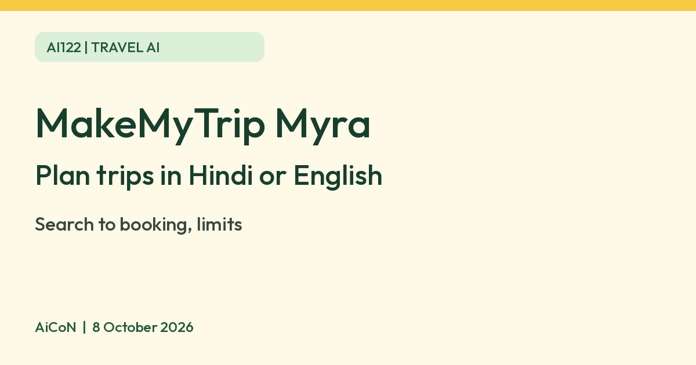

MakeMyTrip Myra: an AI assistant that plans trips in Hindi or English
Myra is MakeMyTrip's AI travel assistant. MakeMyTrip says you can ask travel questions by text or voice in Hindi or English, and that Myra can take you from search to a confirmed booking. Check dates, prices and cancellation terms before you pay.

What it is
Myra is the AI travel assistant from MakeMyTrip. In an August 2025 release, MakeMyTrip said a new generative AI trip planning assistant, an upgrade to Myra, helps with travel planning from discovery to booking and after-sales questions, by voice and text.
What MakeMyTrip says you can ask
- Open questions in Hindi or English, such as where to go for a relaxing holiday with kids, or a hotel in Udaipur within a budget. The release gives these as examples.
- Route ideas for a multi-city trip.
- Help across flights, stays, holiday packages, ground transport, visas and forex, per the release.
- MakeMyTrip's May 2026 investor filing says Myra can now take a traveller from search to a confirmed, paid booking in one conversation, by voice if you want.
| Languages | Hindi and English per the release. It says more Indian languages were planned. |
|---|---|
| Account | MakeMyTrip's chatbot terms say you need a registered account to use the service. |
| Where | MakeMyTrip's Myra page and the MakeMyTrip app and site. Exact menus can change, so open the site and look for Myra. |
Limits to know
- Booking spends real money. Before you pay, check dates, passenger names, total price, baggage and cancellation or refund rules yourself.
- MakeMyTrip's chatbot terms say the chatbot may contain errors, design flaws or other problems. Those terms name the chat feature "Mya", so they may be an older page for the same feature.
- The August 2025 release described the assistant as a beta at launch, so features may differ now.
- The company's usage figures are its own claims, and we do not repeat them.
- We did not verify the price of using Myra, and we did not test it ourselves. We quote no price.
Frequently asked questions
Can I use Hindi?
Yes, MakeMyTrip says Hindi and English.
Can it book for me?
MakeMyTrip says it can take you through to a paid booking. Review everything before you confirm.
Is it free?
We did not find a price or fee for Myra on the pages we read.
Sources: MakeMyTrip press release, 7 August 2025, MakeMyTrip results filing, May 2026, MakeMyTrip chatbot terms. Checked 8 October 2026.